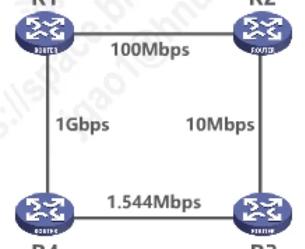
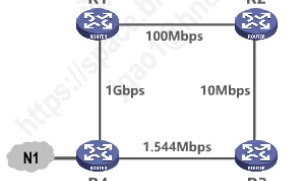
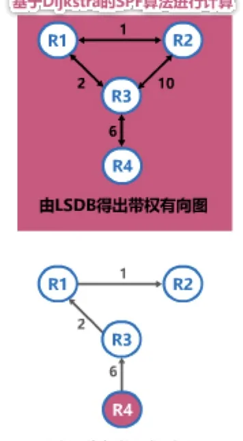
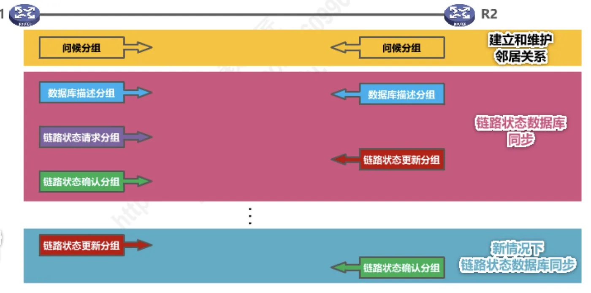
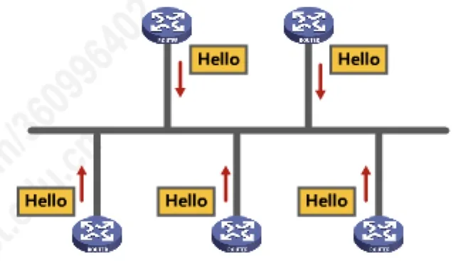
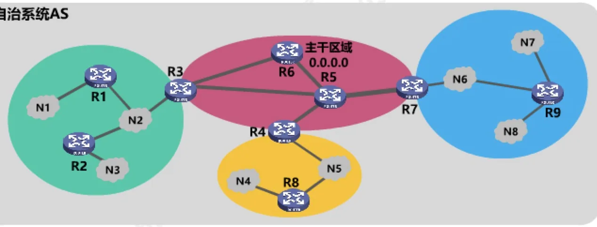

计算机通信与网络 · 第 4 章 网络层
4.6.3 开放最短路径优先OSPF的基本工作原理
上一节看到了 RIP 的三个短板：度量只看跳数、网络规模受限、还有「坏消息传播得慢」。这一节看它的替代者——开放最短路径优先 OSPF。它换了一套完全不同的思路：每个路由器不再交换「到各网络的距离」，而是把自己与邻居之间的链路状态通告给全网，人人攒出一份相同的链路状态数据库，再用 Dijkstra 的最短路径算法各自算路由。因为算法本身就保证不会绕圈，OSPF 既没有路由环路，收敛也快得多。
1. OSPF 的由来与主要特点
开放最短路径优先 OSPF（Open Shortest Path First）是为克服 RIP 的缺点而在 1989 年开发出来的。它的名字里就写着两个关键点：
- 「开放」表明 OSPF 协议不是受某一家厂商控制，而是公开发表的；
- 「最短路径优先」是因为它使用了 Dijkstra 提出的最短路径算法 SPF（Shortest Path First）。
与 RIP 相比，OSPF 有几点根本性的不同：
- OSPF 是基于链路状态的，而不像 RIP 那样基于距离向量；
- OSPF 采用 SPF 算法计算路由，从算法上保证了不会产生路由环路；
- OSPF 不限制网络规模，更新效率高，收敛速度快。
这三点正好对应 RIP 的三个毛病：RIP 的距离向量算法容易产生路由环路，RIP 用周期性交换整张路由表的办法更新、收敛慢，RIP 还把路径限制在 15 跳以内、只能用于小型互联网。
2. 链路状态与链路「代价」
OSPF 的基础是链路状态。所谓链路状态，指的是本路由器都和哪些路由器相邻，以及相应链路的代价（cost）。「代价」可以用来表示费用、距离、时延、带宽等等，具体取什么含义、怎么算，都由网络管理人员决定。
讲义举了思科路由器中 OSPF 计算代价的方法：用 100 Mbps 除以链路带宽；计算结果小于 1 的值仍记为 1；大于 1 且带小数的，舍去小数部分。图 1 的四台路由器就是按这个办法算出各自链路代价的。

按这个算法把图 1 的拓扑逐条算一遍：R1—R2 是 100 Mbps，100 ÷ 100 = 1；R2—R3 是 10 Mbps，100 ÷ 10 = 10；R1—R4 是 1 Gbps = 1000 Mbps，100 ÷ 1000 = 0.1，小于 1 仍记为 1；R4—R3 是 1.544 Mbps，100 ÷ 1.544 ≈ 64.77，舍去小数得 64。于是每台路由器记录下的链路状态就是下面这张表——注意它是「双向」的，同一条链路在两端路由器上各记一笔。
| 路由器 | 邻居 | 链路带宽 | 代价 |
|---|---|---|---|
| R1 | R2 | 100 Mbps | 1 |
| R1 | R4 | 1 Gbps | 1（100 ÷ 1000 = 0.1，小于 1 记为 1） |
| R2 | R1 | 100 Mbps | 1 |
| R2 | R3 | 10 Mbps | 10 |
| R3 | R2 | 10 Mbps | 10 |
| R3 | R4 | 1.544 Mbps | 64（100 ÷ 1.544 ≈ 64.77，舍去小数） |
| R4 | R1 | 1 Gbps | 1 |
| R4 | R3 | 1.544 Mbps | 64 |
3. Hello 分组与邻居关系的建立
OSPF 相邻路由器之间通过交互问候（Hello）分组来建立和维护邻居关系。Hello 分组的发送很有规律：
- Hello 分组封装在 IP 数据报中，发往组播地址 224.0.0.5；
- 发送周期为 10 秒；
- 如果 40 秒没有收到来自某个邻居路由器的 Hello 分组，就认为该邻居路由器不可达。
从封装结构上看，承载 Hello 分组的 IP 数据报中：源 IP 地址是本路由器该接口的 IP 地址，目的 IP 地址是组播地址 224.0.0.5，协议号字段的值为 89，表示载荷是 OSPF 分组；OSPF 分组再分为 OSPF 首部和 OSPF 分组载荷。
每个路由器都维护一张邻居表，表里记着邻居的 ID、收到 Hello 的接口以及一个「死亡」倒计时。例如 R1 的邻居表中，到邻居 R2 的倒计时可能是 36 秒、到 R4 的可能是 18 秒——每收到一次 Hello 就把倒计时重置，一旦数到 40 秒还没收到，就把这个邻居标记为不可达。
4. 链路状态通告 LSA 与洪泛法
使用 OSPF 的每个路由器都会产生链路状态通告 LSA（Link State Advertisement）。LSA 中包含两类信息：
- 直连网络的链路状态信息；
- 邻居路由器的链路状态信息。
图 2 是 R4 产生的 LSA：它里面既有直连网络 N1 的信息，也有邻居 R1、R3 的信息。LSA 并不是直接发出去的，而是被封装在链路状态更新分组 LSU 中，采用洪泛法发送——收到 LSU 的路由器会把它继续转发给除来源之外的所有邻居，这样一条 LSA 就能传遍全网。

使用 OSPF 的每个路由器都有一个链路状态数据库 LSDB，用来存储收到的 LSA。通过各路由器洪泛发送封装有自己 LSA 的 LSU 分组，各路由器的 LSDB 最终将达到一致——也就是说，收敛之后每台路由器手里都有一张全网的「地图」。
5. 基于 LSDB 的 SPF 计算
手里有了全网地图，接下来就该算路了：使用 OSPF 的各路由器基于 LSDB 进行最短路径优先 SPF 计算，构建出各自到达其他各路由器的最短路径，也就是构建各自的路由表。计算用的是 Dijkstra 的 SPF 算法。
图 3 把这一整套流程画得很清楚：从「网络拓扑」出发，各路由器把自己的 LSA 洪泛出去，每台路由器都攒出自己的 LSDB（里面装着 R1、R2、R3、R4 四份 LSA）；由 LSDB 就能得出带权有向图；最后分别以 R1、R2、R3、R4 为根，算出各自的最短路径树。

这里能看出 OSPF 不会产生路由环路的原因：每台路由器都是在一张完整的、全网一致的带权图上独立地用最短路径算法算路，算出来的结果是一棵以自己为根的树，而树上不可能有环。
6. OSPF 的五种分组类型
OSPF 共有五种分组类型，分工如下：
- 类型 1，问候（Hello）分组：用来发现和维护邻居路由器的可达性；
- 类型 2，数据库描述（Database Description）分组：向邻居路由器给出自己链路状态数据库中的所有链路状态项目的摘要信息；
- 类型 3，链路状态请求（Link State Request）分组：向邻居路由器请求发送某些链路状态项目的详细信息；
- 类型 4，链路状态更新（Link State Update）分组：路由器使用这种分组将自己的链路状态进行洪泛发送，即用洪泛法对全网更新链路状态；
- 类型 5，链路状态确认（Link State Acknowledgment）分组：对链路状态更新分组的确认分组。
图 4 是 OSPF 的基本工作过程。整个过程从交换问候分组、建立和维护邻居关系开始；接着双方用数据库描述分组互相「报账」，各自给出自己 LSDB 中所有链路状态项目的摘要，看看对方有哪些自己没有的（或有更新的）项目；发现有缺的，就用链路状态请求分组索取详细信息，对方用链路状态更新分组把这些 LSA 发过来，收到的一方再回一个链路状态确认分组。这样两台路由器的链路状态数据库就同步了。此后只要每隔 30 分钟或者链路状态发生变化，路由器就会再次用链路状态更新分组把新的链路状态洪泛出去。

7. 多点接入网络中的邻居关系：DR 与 BDR
上面的过程在两点之间很清楚，但放到多点接入网络（例如以太网）里就有问题了：如果 n 个路由器两两都建立邻居关系，邻居关系数量会按 n(n−1)÷2 增长，路由器越多，交换 Hello 和维护邻居关系的开销就越大。OSPF 的办法是选举指定路由器 DR（Designated Router）和备用的指定路由器 BDR（Backup Designated Router）：
- 所有非 DR/BDR 只与 DR/BDR 建立邻居关系；
- 非 DR/BDR 之间通过 DR/BDR 交换信息。
这样一来，邻居关系的数量降到了 2(n−2) + 1（n−2 个普通路由器各与 DR、BDR 各建一条，再加上 DR 与 BDR 之间的一条）。图 5 画的就是多点接入网络中各路由器互发 Hello 分组的情形。

8. 划分区域：让 OSPF 能支撑大规模网络
OSPF 虽然不限制网络规模，但路由器一多、链路状态一多，每台路由器要存储的 LSA 和要做的计算都会变得很重。为了使 OSPF 能够用于规模很大的网络，OSPF 把一个自治系统再划分为若干个更小的范围，叫做区域（Area）。图 6 中，整个自治系统 AS 被划成了一个主干区域和若干普通区域。

划分区域的好处，是把利用洪泛法交换链路状态信息的范围局限于每一个区域而不是整个自治系统，这就减少了整个网络上的通信量；区域内部的路由器也只需要维护本区域的链路状态数据库，负担小了很多。
按路由器所处的区域位置，OSPF 里的路由器分为四类：
- 区域内路由器 IR（internal router）：所有接口都在同一个区域内的路由器，如 R1、R2、R8、R9；
- 区域边界路由器 ABR（area border router）：连接主干区域和其他区域的路由器，如 R3、R4、R7；
- 主干路由器 BBR（backbone router）：接口在主干区域 0.0.0.0 中的路由器，如 R3、R4、R5、R6、R7；
- 自治系统边界路由器 ASBR（AS border router）：与其他自治系统交换路由信息的路由器，如 R6。
可以看出这几个角色是可以重叠的：R3、R4、R7 既是区域边界路由器，又是主干路由器；而 R6 除了是主干路由器，还是自治系统边界路由器。主干区域（区域 0.0.0.0）是所有区域之间的「交通枢纽」，其他区域之间的路由信息都要经过它中转。
本节小结
- OSPF 是为克服 RIP 的缺点在 1989 年开发的：「开放」指协议公开发表、不受某一家厂商控制；「最短路径优先」指使用 Dijkstra 的 SPF 算法。
- OSPF 基于链路状态而不是距离向量。链路状态包括本路由器与哪些路由器相邻、以及相应链路的代价；代价可以表示费用、距离、时延、带宽等，由网络管理人员决定（思科路由器按「100 Mbps ÷ 链路带宽」计算，小于 1 记为 1，小数舍去）。
- 相邻路由器用问候（Hello）分组建立和维护邻居关系：Hello 封装在 IP 数据报中发往组播地址 224.0.0.5，协议号为 89，每 10 秒发送一次，40 秒收不到就认为邻居不可达。
- 每个路由器产生链路状态通告 LSA（含直连网络和邻居路由器的链路状态信息），LSA 封装在链路状态更新分组 LSU 中洪泛发送；各路由器的链路状态数据库 LSDB 最终达到一致，再基于 LSDB 用 SPF 算法算出各自的最短路径树，从算法上保证了不会产生路由环路。
- OSPF 有五种分组：问候、数据库描述、链路状态请求、链路状态更新、链路状态确认；工作过程是「建立邻居关系 → 同步 LSDB → 30 分钟或链路状态变化时洪泛更新」。
- 在多点接入网络中，为避免邻居关系数量过大，要选举 DR 和 BDR，非 DR/BDR 只与 DR/BDR 建立邻居关系，并通过它们交换信息。
- 为支撑大规模网络，OSPF 把自治系统划分为若干区域（主干区域为 0.0.0.0），把洪泛的范围限制在区域内部以减少通信量；路由器按位置分为区域内路由器 IR、区域边界路由器 ABR、主干路由器 BBR 和自治系统边界路由器 ASBR。
- 下一节看用于自治系统之间的外部网关协议 BGP：它不追求最短路径，而是要考虑策略。